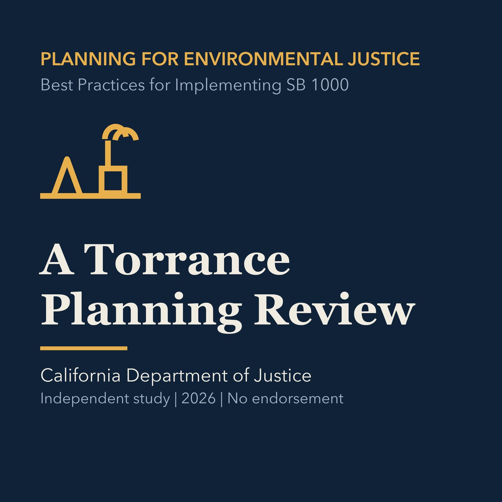

EPISODE 08
A Torrance Planning Review
Applies the complete study framework to Torrance's ongoing planning work without making a legal compliance determination.

- Stable GUID
a4f3d851-83a5-5c6b-9526-c1418ba70cfd- Release
- environmental-justice-land-use-planning-v2026.2
- SHA-256
f1c735987262cd02c3b2cd3291d1c9bbc2fb3cb687e36a09c7570d1a70e506ef